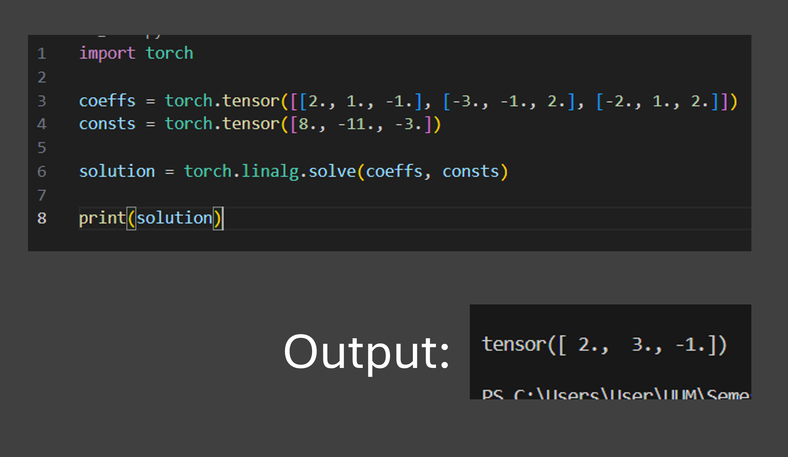

Introduction
Elementary Row Operations, Gaussian Elimination and Matrix Inverse are all methods to solve a linear system.
Elementary Row Operations
ERO (or Gauss-Jordon) transform the matrix into Reduce Row Echelon Form
Gaussian Elimination
Gaussian Elimination transform the matrix into Row Echelon Form and then performing back substitution to find the value of all the variables
Matrix Inverse
Matrix Inverse use the property "X = A-1 B" to solve for "AX = B"
What's the importance of solving linear equations using programming?
- Scale and Volume: Matrices beyond 3x3 with millions of variables (Like AI) are impossible to solve by hand.
- Real-Time Execution: Enables instant calculation for technologies like Self Driving Cars, GPS Triangulation and video game physics.
- Automation of Complexity: Converts messy real world problems into linear formats that computer can solve to predict outcomes.
- Efficiency Engines: Algorithm like Gaussian Elimination provide the most mathematically cheap way for hardware to find optimal solutions for logistics an economy.
Disclaimer
This project is to demonstrate how these methods can be implemented through programming. In a production, real world setting, we would use NumPy (a library for numerical computing). NumPy leverages C-level optimization and CPU vectorization to handle these calculations with significantly higher performance and efficiency than standard Python loops.
Example implementation using NumPy

Example implementation using PyTorch (A Library for Deep Learning)
